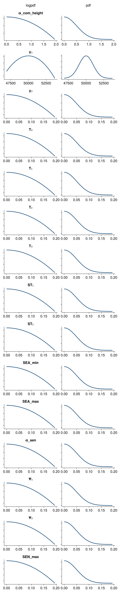

Calibration to irrigated grasslands in Europe
Experimental data for rye grass from the FAO experiments database described by:
- Corrall, A.J., 1984. Grass growth and seasonal pattern of production under varying climatic conditions. In: Riley, H. and A.O. Skjelvåg (Eds.), The impact of climate on grass production and quality. Proceedings of the 10th meeting of the European Grassland Federation, 26-30 June 1984, Ås, Norway
- Corrall, A.J., 1988. Prediction of production from grassland. Information Bulletin of the FAO European Research Co-operative Network on Pastures and Field Crops (Herba), no. 1. Published by the Agronomy Institute of the University of Florence, Italy. pp. 25-28.
Specific use for calibration of LINGRA of the above data is described by:
- Bouman, B.A.M, A.H.C.M. Schapendonk, W. Stol & D.W.G. van Kraalingen. (1996) Description of the grassland growth model LINGRA as implemented in CGMS. https://edepot.wur.nl/336784
Calibrated parameters and their prior distribution
using PrettyTables
using CairoMakie
using Statistics
using Distributions
using Unitful
import GrasslandTraitSim as sim
inference_obj = sim.calibrated_parameter_fao_irrigated(; )
p_keys = collect(keys(inference_obj.priordists))
p_priors = collect(inference_obj.priordists)
p_priors_str = replace.(string.(p_priors), "\n" => "", "{Float64}" => "",
"Distributions." => "")
m = hcat(p_keys, p_priors_str, inference_obj.prior_text)
pretty_table(m; header = ["Parameter", "Prior Distribution", "Justification"],
alignment = [:r, :l, :l], crop = :none, columns_width = [0, 40, 70], autowrap = true)┌──────────────┬──────────────────────────────────────────┬────────────────────────────────────────────────────────────────────────┐
│ Parameter │ Prior Distribution │ Justification │
├──────────────┼──────────────────────────────────────────┼────────────────────────────────────────────────────────────────────────┤
│ α_com_height │ Truncated(Normal(μ=0.0, σ=0.5); │ TODO │
│ │ lower=0.0, upper=3.0) │ │
│ γ₁ │ Truncated(Normal(μ=50000.0, σ=1000.0); │ TODO │
│ │ lower=40000.0, upper=60000.0) │ │
│ γ₂ │ Truncated(Normal(μ=0.0, σ=0.05); │ TODO │
│ │ lower=0.0, upper=2.0) │ │
│ T₀ │ Truncated(Normal(μ=0.0, σ=0.05); │ TODO │
│ │ lower=0.0, upper=2.0) │ │
│ T₁ │ Truncated(Normal(μ=0.0, σ=0.05); │ TODO │
│ │ lower=0.0, upper=2.0) │ │
│ T₂ │ Truncated(Normal(μ=0.0, σ=0.05); │ TODO │
│ │ lower=0.0, upper=2.0) │ │
│ T₃ │ Truncated(Normal(μ=0.0, σ=0.05); │ TODO │
│ │ lower=0.0, upper=2.0) │ │
│ ST₁ │ Truncated(Normal(μ=0.0, σ=0.05); │ TODO │
│ │ lower=0.0, upper=2.0) │ │
│ ST₂ │ Truncated(Normal(μ=0.0, σ=0.05); │ TODO │
│ │ lower=0.0, upper=2.0) │ │
│ SEA_min │ Truncated(Normal(μ=0.0, σ=0.05); │ TODO │
│ │ lower=0.0, upper=2.0) │ │
│ SEA_max │ Truncated(Normal(μ=0.0, σ=0.05); │ TODO │
│ │ lower=0.0, upper=2.0) │ │
│ α_sen │ Truncated(Normal(μ=0.0, σ=0.05); │ TODO │
│ │ lower=0.0, upper=2.0) │ │
│ Ψ₁ │ Truncated(Normal(μ=0.0, σ=0.05); │ TODO │
│ │ lower=0.0, upper=2.0) │ │
│ Ψ₂ │ Truncated(Normal(μ=0.0, σ=0.05); │ TODO │
│ │ lower=0.0, upper=2.0) │ │
│ SEN_max │ Truncated(Normal(μ=0.0, σ=0.05); │ TODO │
│ │ lower=0.0, upper=2.0) │ │
└──────────────┴──────────────────────────────────────────┴────────────────────────────────────────────────────────────────────────┘Show the log density of the priors
begin
fig = Figure(; size = (600, 3000))
Label(fig[0, 1], "logpdf"; tellwidth = false)
Label(fig[0, 2], "pdf"; tellwidth = false)
# p = sim.load_optim_result()
for (i,k) in enumerate(keys(inference_obj.priordists))
d = inference_obj.priordists[k]
mi = quantile(d, 0.001)
ma = quantile(d, 0.9999)
x = collect(LinRange(mi, ma, 300))
Axis(fig[i, 1]; title = String(k), yticklabelsvisible = false)
lines!(x, logpdf.(d, x); color = :steelblue4, linewidth = 3)
# vlines!(ustrip(p[k]); color = :orange, linestyle = :dash)
Axis(fig[i, 2]; yticklabelsvisible = false)
lines!(x, pdf.(d, x); color = :steelblue4, linewidth = 3)
# vlines!(ustrip(p[k]); color = :orange, linestyle = :dash)
end
fig
end